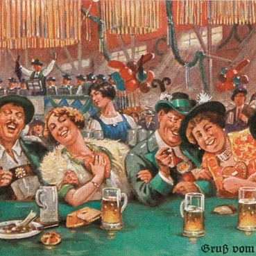
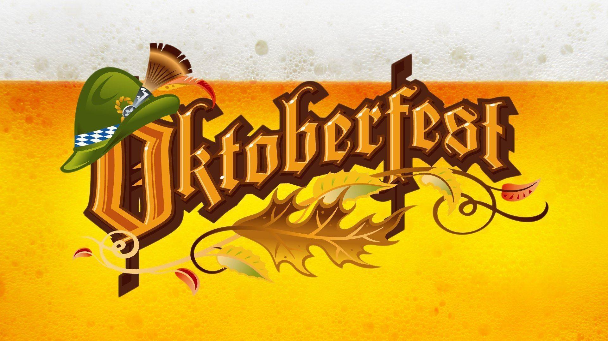

Historia

No início da década de 80, empresários e representantes de entidades de classe e o poder público da cidade se uniram e idealizaram um evento onde esta cultura pudesse ser celebrada e mostrada ao mundo. Inspirada naturalmente pela homônima alemã nasceu então, em 1984, a Oktoberfest Blumenau. Naquele primeiro ano, em apenas 10 dias de festa, mais de 100mil pessoas visitaram o evento.
Venha para Oktober!!!
Do dia 9 a 27 de outubro em Blumenau SC
Tradição Alemã
Trajes, comidas e danças

Comidas
Trajes
Típico traje alemão